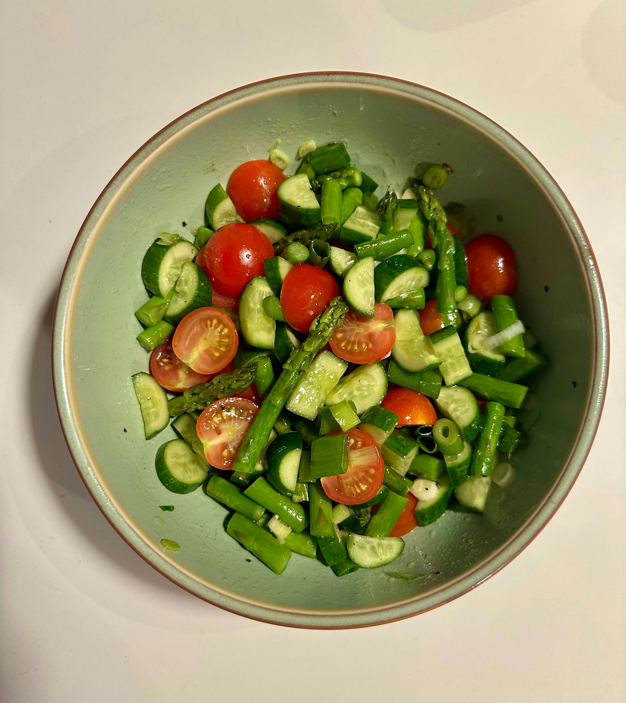

home
Vegetable Medley

Description:
This is a healthy meal or snack.
Ingredients:
- ⅔ cup white vinegar
- ⅔ cup vegetable oil
- ⅓ cup chopped onion
- 1 teaspoon white sugar
- 1 teaspoon salt
- 1 teaspoon dried basil
- 1 teaspoon dried oregano
- ⅛ teaspoon garlic powder
- 1 (14 ounce) can artichoke hearts, drained and quartered
- 1 cup fresh broccoli florets
- 1 cup cauliflower florets
- 1 cup sliced carrots
- 1 cup sliced fresh mushrooms
Instructions:
- In a small saucepan, whisk together the vinegar, oil, onion, sugar, salt, basil, oregano and garlic powder. Bring mixture to a boil; cover, reduce heat and simmer 12 minutes.
- In a large bowl, add the artichoke hearts, broccoli, cauliflower, carrot and mushrooms. Pour the vinegar mixture over all and toss to coat.
- Cover and chill at least 3 hours. Serve using a slotted spoon.